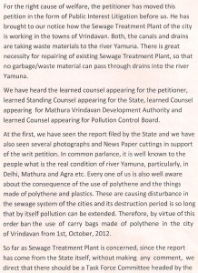
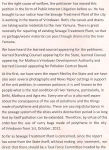
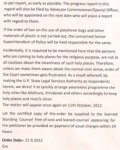
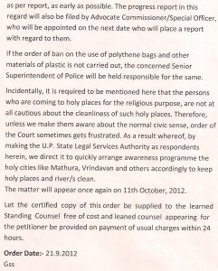

December 14th, 2012Green Pilgrimage Network India report – November 2012
December 14th, 2012Green Pilgrimage Network meeting in Rishikesh
Last week the Bhumi Project hosted a meeting of pilgrim towns, cities and sites in Rishikesh as part of the Green Pilgrimage Network (India chapter). The meeting was co-hosted by the Alliance of Religions and Conservation (ARC) (www.arcworld.org) and the Ganga Action Parivar of Parmarth Niketan ashram in Rishikesh (www.gangaaction.com).
The meeting, on November 23 and 24, brought together representatives from the towns of Kolkata, Mayapur, Rishikesh, Sri Sailam, Varanasi, Vishakapatnam and Vrindavan. It also included key conservationists, including the head of Rajaji National Park and representatives of some of India’s most important tiger and wildlife reserves; a representative from ICLEI (www.iclei.org) to advise on sustainable city policy and faith leaders from different Hindu traditions.
The discussion circled around how to make pilgrimage places greener, and the theologies, technologies and possibilities of this.
Solutions included: inaugurating a Hindu Environment Day (with an annual week of action and reflection); education and outreach; establishing green standards for pilgrimage cities and their temples; working out the future and outreach of an Indian network of green pilgrimage cities.
The first morning opened with a welcome address by Pujya Swami Chidanand Saraswati of Parmarth Niketan. Speaking to the delegates, he expressed his pleasure at hosting them at his ashram and encouraging them to be the foundation of a new movement to preserving the sanctity of Hindu holy places. Pujya Swamiji is the inaugural chair for the Hindu members of the Green Pilgrimage Network.

The opening morning of the conference
Day one was dedicated to highlighting some of the successes, challenges and opportunities in pilgrim towns. Jayanta Basu spoke of the annual Durga Puja in Kolkata. Since 2007 he has worked with city authorities to minimise the environmental impact of the festival. He highlighted some of the steps taken, such as awareness raising and using lead-free paints on the deities which are submerged into the River Ganges as part of the festival.
Dr Rajendra Krishna shared the opportunities available for greening the Simhachalan temple in Vishakapatnam. He spoke of the possibility of improving the environmental standards of the temple and surrounding areas and things they are already doing, such as using bio-degradable plates.
The first day closed with a special havan on the banks of the Ganges and a Ganga aarti led by Pujya Swamiji.

Special havan on the banks of the Ganges

Ganga aarti performed by Pujya Swami Chidanand Saraswati
The second day opened with an address by Sri Chaturvedi Swami, founder of the Sri Ramanuja Mission Trust. He spoke on the need for the development of good character if we are to make meaningful changes in the world. He also spoke of the Hindu view of the environment and it’s importance in the modern age.

Chaturvedi Swami speaking
This opening address then set the tone for the day as delegates broke into smaller groups to discuss short and long-term projects they could undertake in their religious towns and places. By the end of the discussions, some suggestions included:
- The introduction of an annual Hindu Environment Day (or Week) based around an appropriate existing Hindu festival or day.
- Developing a Green School Curriculum in every pilgrim city
- Developing realistic and action-based environmental standards for temples in pilgrim cities, towns and routes all around India, as well as for the towns and cities themselves, to allow comparison and improvement
- Pilgrimage shrines based near national wildlife parks to liaise with park authorities to cut down noise and light pollution and urgently find solutions for toilets and waste disposal. So many plastic bags are thrown around during pilgrimage (and at other times) that wild animals eat them and die in painful ways that are abhorrent to Hindu beliefs.
- Finding realistic, affordable solutions for solid waste management – i.e. cleaning up the many tonnes of trash that amass in India’s sacred places, particularly at key festivals, when millions of pilgrims can arrive at one time.
For the final session on the second day all delegates were asked to sign the international Green Pilgrimage Network vision statement. Each delegate then proceeded to place a green handprint on a specially-designed banner to mark their commitment.

Ram Gopal Mohley, Mayor of Varanasi, signs the Green Pilgrimage Network vision statement

Green hands – delegates pledge their commitment to the Network
Work is now underway to begin implementation of the ideas suggested and develop resources for member cities. The Bhumi Project will also be present at the Kumbh Mela in Allahabad during January where we hope to host a week of events with Parmarth Niketan and other Indian partners.
Source: The Bhumi Project
 
 
November 5th, 2012BVHA UPS ANTE TO BAN THE SALE OF NON VEGETARIAN FOOD IN VRINDAVAN

Baba Sevak Sharan addressing the BVHA
Vrindavan, 2nd November 2012:
Braj-Vrindavan Heritage Alliance chalks out action plan to get the sale of egg, meat and other non vegetarian food completely banned in Vrindavan. It is simply against our faith and the sanctity of the temple town of Vrindavan said Baba Sevak Sharan, one of the founding members of the BVHA, who attended the meeting after a long gap of time due to his old age.
A brain storming session on how the unethical practice can be stopped in Vrindavan was conducted at the Anandamayee Ashram in Vrindavan. A large gathering of the saints, brajwasis and youths were present during the meeting in presence of Supreme Court lawyer Rajendra Verma.

All saints gathered
Careful deliberation were given on all the possible options which can be adopted to get it banned in Vrindavan, which included mass awareness, sensitizing the temple authorities, writing petitions to the government, padyatra, rallies and finally moving to the court. Some of the brajwasis suggested writing an appeal to the Municipal Chairman and all the 25 ward members to pass a municipal resolution to ban the sale and consumption of egg, fish and meat in Vrindavan, keeping in view the faith of hundreds of thousand peoples connected with this pilgrimage town.
Sensitizing ourselves is the best way to ban the sale of the non vegetarian food in Vrindavan, said His Holiness Acharya Shrivatsa Goswami Ji Maharaj. We should take the legal course of action as the Vrindavan municipality won a legal case for non granting license, noted Acharya Naresh Narain, the Chief Editor of the monthly religious magazine ‘Anant Sandesh’ .
Shri Madan Bihari Das Baba from Tatiasthan said that hunting was not permissible in Vrindavan during Akbar’s time in Vrindavan and whole Vraja region. Swami Haridas didn’t allow Akbar’s troops in Vrindavan when he visited Vrindavan in apprehension that they might hunt animals here.
The meeting was attended by Swami Paramadvaiti, Swami Devendra Chaitanya, Sushil Kumar Sharma, Suresh Chandra Sharma, Laxmi Kant Bohre, Ramnarayan Brajwasi, Girdhari Brajwasi, Dr. Chandra Prakash Sharma, Tota Ram Upadhyay and many others attended the meeting.
The meeting was presided by thakur Shri Krishna Chhaliya Ji Maharaj through his representative Shri Shyamal Brahmachari, the mahant of the ashram.
September 19th, 2012Clean river bed, green tribunal tells UP
NEW DELHI: Six months after it directed Delhi and UP governments to stop dumping solid waste on the Yamuna river bed, the National Green Tribunal on Monday issued fresh instructions to the UP irrigation department to immediately remove all the debris from the river bank.
The order, issued by a bench of expert member Dr G K Pandey and acting chairperson Justice AS Naidu, has asked the irrigation department to “remove all the debris lying in the banks of Yamuna, within their jurisdiction, irrespective of the fact as to who has dumped it, more so because presence of debris in the locality not only causes pollution but is also hazardous to river eco-system and flow of water”.
The NGT order has given seven days to the ministry of environment and forest, Delhi government, DDA, DPCC, and Yamuna River Development Authority (YRDA) and the irrigation department to stop encroachment and dumping of solid waste on the riverbed.
“Dumping of debris has more or less stopped after the order, but authorities were not clearing the mess. In fact, UP irrigation department said that the debris has not been removed so far due to the monsoon,” said Manoj Misra, the petitioner.
The land in question, where tonnes of construction debris have been lying for the past several months, falls within the geographical boundary of Delhi but is owned by the UP irrigation department.
“We saw massive debris deposition along the Yamuna Pushta near Geeta Colony in the latter part of 2011. We wrote to the LG and YRDA to take action. The LG also wrote to agencies concerned and issued orders to DDA, PWD, irrigation and flood control and other civic agencies to ensure that no waste was dumped on the river bed but the agencies failed to react. Some measures to prevent trucks from entering the area were taken, but they were inadequate,” said Misra.
While DDA had said that it would not be able to clean the area since the land belonged to the UP irrigation department. The latter had said that it would wait for the UP elections to get over. Now, it is waiting for the monsoon to end.
Source: Times of India
Participants:
- Shri Naresh Narayan Acharya
- Shri Shrivatsa Goswami Acharya
- Shri Madan Bihari Das Baba
- Shri Devendra Caitanya Acharya
- Shri Sharvan Kumar Acharya
- Shri Bal Krishna Gautam
- Shri Damodar Sharma
- Shri Candra Lal Sharma
- Shri Professor K.M. Agrawal
- Shri Ranganath Prem
- Shri Radhe Shyam Chaudary
- Shri Jagadis Neelam
- Shri Rajveer Singh
- Shri Jagannath Das
- Shri Ram Sastri
- Shri Sukhbir Singh
- Shri Rajendra Kumar
- Shri Ankit Agrawal
- Shri Kanhaiya Agrawal
- Shri Gauri
- Shri Giridhari Lal
- Shri Yogendra Brijwasi
- Shri Tama Krishna Das
- Shri Jagadananda Das
- Shri Partha Sarathi Das
- Shri Jagannath Poddar
- Shri Vishnupad Das
- Shri Janmastami Das
- Smt Gandharvika Dasi
Minutes of the meeting:
-Shri Jagannath Poddar
SUBJECT : A letter on the name of Chief Minister, regarding formation of one “MCD”for both: Vrindavan and Mathura.
Sh. K.G. Gupta has asked to add bung community with this .
A strict letter should be given to MLA Sh. pradeep Mathur also.
A similar letter should be given to Dr. Ashok Agarwal and Vineet Narayan.
A letter should be given to ban eggs, meat and alcohol in Vrindavan.
(Shri Madhu Mangal asked to give hi ssuggestions on above matter)
-Sh. Bal Krishan Gautam:
This matter of MCD came into existence earlier but dust of time covered it, now again it has come in front of us
-Dr Chandra lal Shama:
Miner is very dangerous for Vrindawan so many regulations happened on the name of miner.
Only paper work is not enough , use need to bring in revolution for the change
Date for the municipal corporation should be extend
Municipal Corporation should not be formed
-Shri Devendra Dixit Ji:
Formation of Municipal Corporation will reduce importance of Vrindavan
Requirement of Municipal Corporation should be completed with the help of local people
-Dr Mahendra Pratap:
The ancient beauty of Vrindavan should be restored .There should be a complete ban on highrised multistory buildings.
Municipal Corporation should be opposed
-Shri Devendra Chaitanya:
Parliament member Shri Darshan Singh Yadav arrived at Keshi ghat in Favor of save Yamuna movement ,to make it Stronger and people from all different religion came for this. we should also unit and work together in similar way for this.
-Shri Baba Madan Bihari Das
More respects has been added by connecting Mathura’s Name with Vrindavan.
Highrised Multi story Buildings should not be constructed in Vrindavan.
Mathura can be under MCD but Vrindavan should kept separate from this matter
We should go to Supreme Court and High Court to stop this. A representative committee should go and meet
-Shri Shrivatsa Goswami Ji
There is importance of Vegetarian & Non Vegetarian eating habits in Vrindavan lifestyle and today’s Non Vegetarian eating habits like Egg, Meats, Chicken etc. Is non favorable to Vrindavan’s Pious Devotional Life.
Wine Shop (Alcohol) Vendors License in Vrindavan Should be limited within the Eight Km of Saharanpur Office. There is one in Angoli also.
They Made a kund in Ramakrishna Temple which coasted 12 Lacs
Important Thing is there is destruction happening on the name of Development planning , which is not right.
Vrindavan needs a integrated planning.
MCD should not be formed this will Spoil the ancient Image of Vrindavan.
Sri Vrindavan is very abode of Supreme personality of God Head Lord Krishna.
Vrindavan was reestablished in 1598 along with moza dhorera, moza dusayat, moza rajpur by Abul Fazal.
Abul Fazal was sent by Akbar.
This is again very much possible we’ll he to take all voters Signatures and sent it to the all political front.
We should take all political parties along with the representative committee to Chief Minister.
For this we should call for a meeting again, in which we should invite all parties along with all the Spiritual leaders (Saints)
Next Meeting should be called with Four Sampradayas.
BVHA is an unorganized organization from the New beginning and it work without the Assembly.
We Should unite and work together.
Income on the banks of Yamuna.
There should be partnership of Braj wasis in any Vrindavan planning.
Vrindavan should be declared as a place of Pilgrimage
We should develope Kumbh Mela Zones.
A planning should be created in opposed to MCD, and everyone should sign it along with their Names, Phone No’s and Signatures.
Jagat Ji Will Start an Online Petition.
-Shri Naresh Narayan Ji
A Pamphlet Should Be Printed and should be circulated along with all the news Papers.
Only Vrindavan is Core Zone for (PANCH KOSHIYA) rest all is exterior.
Shri Sukh Dev muni (President Athkrishna Temple)
MCD Should not be fromed.
This Battle between Deva’s and Asuras had been going on from the Time immemorial , we should move forward into this along with the holy name of Hari.
Meeting ends with Kirtan
May 25th, 2012BVHAlliance meeting – Pandawali Kunj, 8th April, 2012
Participants:
Shri Radha Kant Shastri Man Mandir Seva Sansthan, Barsana
Shri Jai Krishna Das Man Mandir Seva Sansthan, Barsana
Shri Haresh Kumar Thenua Pani Gaon
Shri Shri Chand Vrindavan
Shri Devendra Pal Singh Advocate Vrindavan
Shri Varun Kumar Bansivat
Shri Govind Kishor Goswami Kishorvan, Vrindavan
Shri Acharya Devendra Chaitanya Pani Gaon
Shri Radhey Shyam Chodhry Vrindavan
Shri Vishnupad Das Vrinda Kunja, Vrindavan
Shri Sundar Gopal Das Pandawali Kunja, Vrindavan
Shri Rajveer Singh Advocate Vrindavan
Shri Jagannath Poddar Friends of Vrindavan, Vrindavan
Shri Partha Sarthi Food for Life, Vrindavan
Smt. Gandharvika Dasi Vrinda Kunja, Vrindavan
Minutes of meeting:
* Meeting was conducted in the presidency of Sh. Govind Kishor Goswami, Kishorvan, Vrindavan.
* Sh. Radhey Shyam Choudhry reported that he has asked an RTI form U.P. Pollution Control Board on present status of plastic carry bags prohibition in Mathura District but he didn’t receive any answer yet.
* He as asked another RTI form Water Board, Mathura regarding- why around 18 drains falls directly in Yamuna? Do they have any policy or action plan to stop these.
* Sh. Radha Kant Shastri reported that there is no Yamuna Water after Bajeerabad Dam, Haryana and it is only drain and Sewage water here. We should approach all Katha Bachak (Priest) that they can raise this issue in their Katha.
* Jagannath Poddar reported that few years back there was a particular fund to clean Yamuna and Ghats, but it has been stopped now. We should ask to administration to start this fund again.
* Partha Sarthi reported that in Vrindavan and surrounding 8 km.; It is illegal to sell eggs, chicken, meat, fish and liquor but it is happening in Vrindavan and nearby and BVHA should oppose this illegal act.
* Sh. Devendra Chaitanya reported that there is no proper place to bury dead body of mother cow and BVHA should approach to administration regarding this issue.
* Sh. Rajveer Singh said that everyone knows that selling eggs, chicken, meat and liquor are illegal act but it is happening then we should ask an RTI regarding this.
* Jai Krishna Das said that there is no Yamuna water after Bajeerabad Dam, Haryana. We are fighting to bring yamuna to Vrindavan. We are organizing a mass movement and in which 2 lacs people will take part that will take place on 1st of March 2013.
* Meeting ended with the thanks note by President.
April 10th, 2012BVHAlliance meeting – Vrinda Kunj, 29th March, 2012
Participants:
-Shri Madan Bihari Das Baba – Tathia Sthan
-Shri Devendra Caitanya
-Shri B.A. Paramadvaiti Maharaj – Vrinda Kunj
-Shri Partha Sarathi – Food for life
-Shri Radhe Shyam Ji
-Shri Rajveer Singh – Advocate
-Shri Bishnupada Das – Helping Hands for Vrindavan
-Shri Sundar Gopal Das – Pandawali Kunj
-Srimati Gandharvika Dasi – Vrinda Kunj
Minutes of the meeting
-We confirm previous committees and made new ones:
.Media coordinator: Shri Devendra Caitanya Acarya.
.Public relations with Sadhus: Shri Madan Bihari Das Baba.
.RTI committee: Shri Rajveer Singh.
.Agaisnt noise pollution committee: Shri Radhe Shyam Ji.
.Yamuna cleaning committee: Shri Paramadvaiti Maharaj, Shri Radhe Shyam Ji, Shri Partha Sarathi, Shri Bishnupada Das.
.Communications with Municipal board committee: Shri Madan Bihari Das Baba, Shri Rajveer Singh, Shri Radhe Shyam Ji, Shri Partha Sarathi.
-Shri Madan Bihari Das Baba said that we should not deal with any donation that will defame BVHA and Shri Paramadvaiti Maharaj added: if someone wants to colaborate in the cause of BVHA he can do any work or support with donations to the different NGO’s are participating on the Alliance.
-Shri Paramadvaiti Maharaj said: It is not good enough putting pressure on Government,we have to follow the example of Chandi Heffner who did a practical action on Yamunaji.
-Shri Madan Bihari Baba enfatized that in every meeting we have to take notes and upload on the website, he also said that we have to approach different organizations in Vrindavan, specialy Hospitals, Schools and Ashrams.
-Finally all the present members agreed to send a thanks letter to K.P.S. Gill and Chandi Heffner for their work fo Yamunaji.